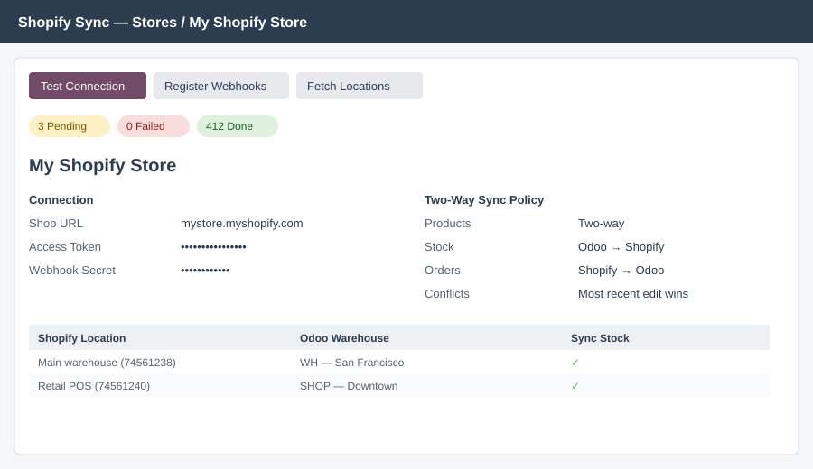
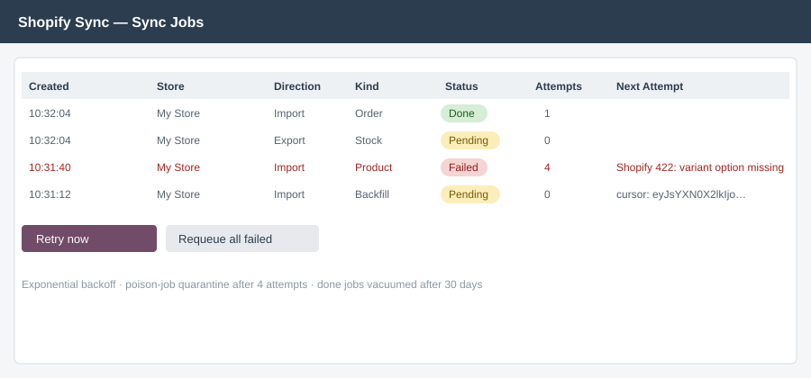
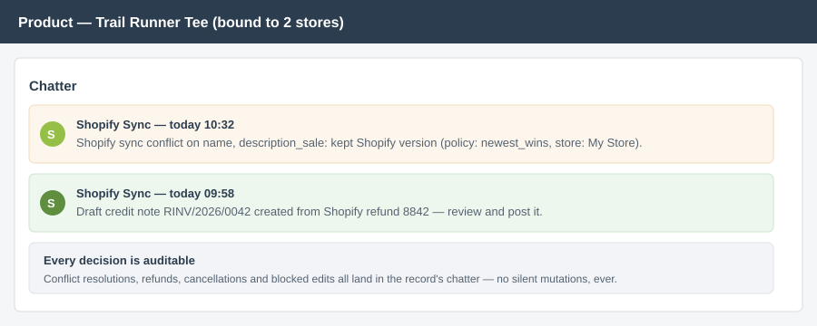

Products, stock, prices, customers, orders, fulfillments & refunds.
Webhook-driven inbound. Queued, rate-limit-safe outbound. A conflict
engine that shows its work.
Webhooks push changes into a
durable job queue in milliseconds; Odoo edits flow back through the
GraphQL Admin API (productSet,
inventorySetQuantities) — the API Shopify commits to.
Same record edited on both sides between syncs? You choose: Odoo wins, Shopify wins, or newest wins — and every resolution is logged on the record's chatter.
Unmatched order lines land on a fallback product with a mismatch log — never dropped. Failed jobs back off, quarantine after 4 attempts and ping your admin.
| Entity | Direction | Highlights |
|---|---|---|
| Products | Two-way | Multi-variant options both ways, images, status (active/draft/archived), SKU, barcode, weight, HS code |
| Prices | Export | Pricelist per store, optional compare-at mapping |
| Inventory | Export (two-way optional) | Multi-location: Shopify locations ↔ Odoo warehouses mapping table, free qty as source |
| Customers | Import | Email dedup, address hierarchy, country/state resolution. Marketing consent never leaves Shopify. |
| Orders | Import | Tax policy (Odoo computes / Shopify totals to the cent), discounts, carrier mapping, auto-confirm & invoice gating, fraud flagging, order-edit diffing, safe cancellations |
| Fulfillments | Export | Modern FulfillmentOrders API, partial shipments per picking, tracking number + carrier |
| Refunds | Import | Draft credit note mirroring the refund — accounting reviews, nothing auto-posts |



Which Shopify plan do I need?
Any plan that allows custom apps (all current plans do). You create a custom app, grant Admin API scopes, paste the token — 5 minutes.
What happens when the same product is edited in both systems?
Your chosen conflict policy decides, and the decision is written to the product's chatter: "Conflict on name, price: kept Shopify version."
Will imported order totals match Shopify?
In "Shopify amounts win" mode, to the cent — tax and rounding adjustment lines guarantee it. In "Odoo computes" mode your fiscal positions rule and Shopify's tax lines are archived in a note.
Does it modify delivered orders when Shopify edits them?
Never silently. Un-delivered quantity changes are applied; anything touching delivered lines creates a review activity for a human.
Support: developers@fleet.ke · Odoo 19 · License OPL-1